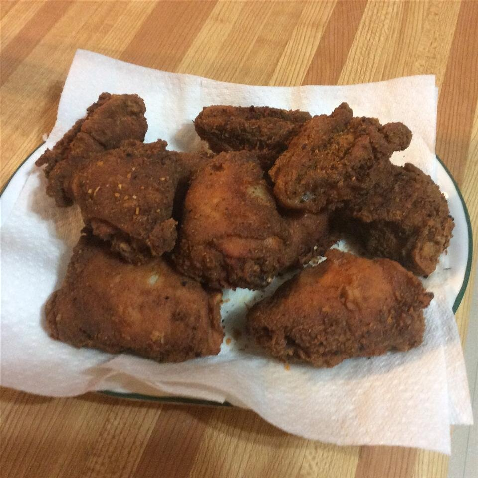

Chicken Fried Chicken

Description
A fun chicken recipe the kids can help prepare. They love crushing the crackers.
It does not matter if the measurements aren't perfect, just wing it! The best part
is the chicken juices that are trapped within the chicken waiting for to burst out
with flavors
Ingredients
- 30 saltine crackers
- 2 tablespoons all-purpose flour
- 2 tablespoons dry potato flakes
- 1 teaspoon seasoned salt
- ½ teaspoon ground black pepper
- 1 egg
- 6 skinless, boneless chicken breast halves
- 2 cups vegetable oil for frying
Directions
-
Place crackers in a large resealable plastic bag; seal bag and crush crackers with a
rolling pin until they are coarse crumbs. Add the flour, potato flakes, seasoned salt,
and pepper and mix well.
-
Beat egg in a shallow dish or bowl. One by one, dredge chicken pieces in egg,
then place in bag with crumb mixture. Seal bag and shake to coat.
-
Heat oil in a deep-fryer or large saucepan to 350 degrees F (175 degrees C)
-
Fry chicken, turning frequently, until golden brown and juices run clear, 15 to 20 minutes.
Original Source
Recipe Link